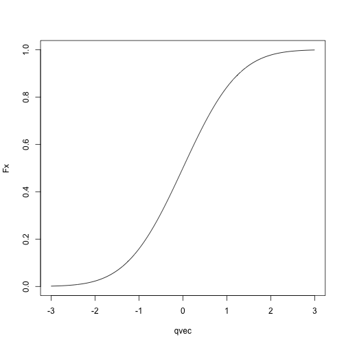
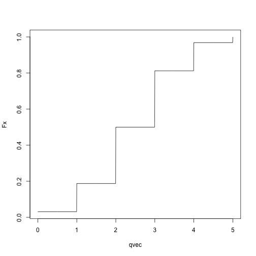
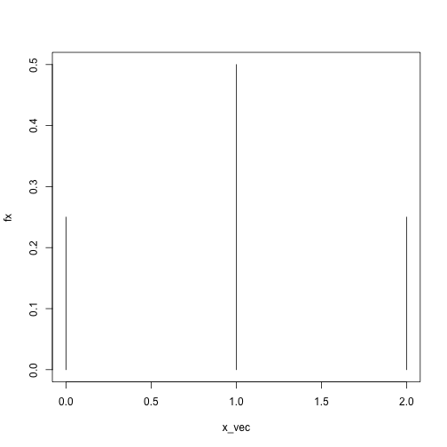
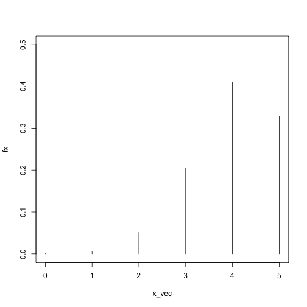
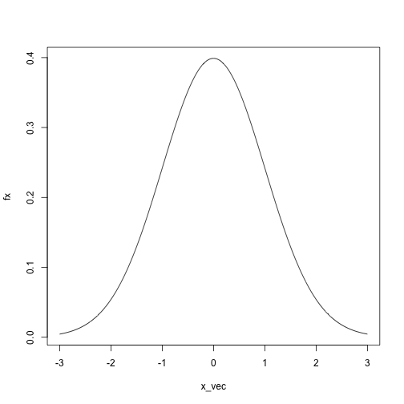
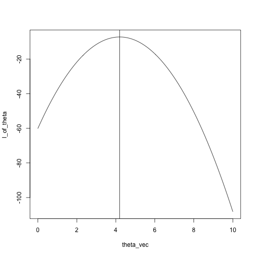
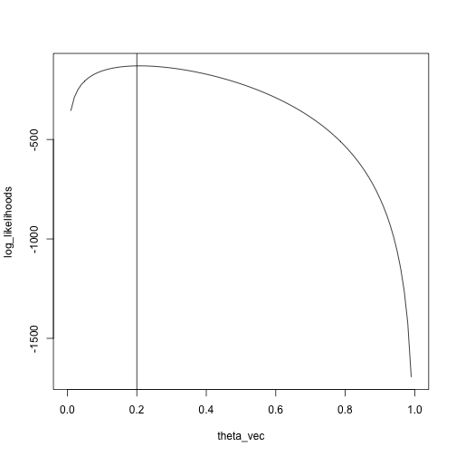

Lecture 14: Fitting probability models
Today: Transitioning away from R/software engineering, towards algorithms for statistics
Agenda
Logistics
Final project
I will post this weekend and send an email or announcement
Can be done individually or in teams of up to 3
If you want to do the project, email me by Friday, March 8, with your group. (No switching between final exam and final project at the last minute.)
Office hours cut short today, I need to leave at 3:45.
Very short review of probability
We need to know about random variables and their distributions.
What is a random variable?
In R, you can draw a random variable from a distribution with functions of the form rdist.
rnorm draws a random variable from a normal distribution.
rbinom draws a random variable from a binomial distribution
rpois draws a random variable from a Poisson distribution
... and so on
Syntax is rdist(n, param1, param2,..., paramn)
n is the number of random variables to draw from the distribution.
param1, ..., paramn are the parameters of the distribution (e.g. mean and standard deviation for the normal, mean for the Poisson, probability of success for the binomial)
Examples
rnorm(n = 10, mean = 5, sd = .1)
## [1] 5.095750 5.116174 5.074507 5.180313 5.136851 5.014525 5.077125
## [8] 5.036322 4.946439 5.057097
rbinom(n = 5, size = 5, prob = .8)
## [1] 4 5 4 5 4
rpois(n = 20, lambda = 10)
## [1] 8 5 13 15 7 6 4 13 12 14 8 11 12 8 10 9 11 12 13 7
A random variable is characterized by its cumulative distribution function (CDF).
Measures the probability that the random variable takes a value at most \(x\).
If \(F_X\) is the cumulative distribution function for a random variable \(X\), \(F_X(x) = P(X \le x)\).
Can get all the other information you need about the random variable from this function (e.g. probability it lies above a certain value, probability it lies in an interval, probability it lies in other sets)
In R, the cumulative distribution functions for common distributions are available as pdist, so
pnorm gives the cumulative distribution function for a normal distribution.
pbinom gives the cumulative distribution function for a binomial distribution.
ppois gives the cumulative distribution function for a Poisson distribution.
Syntax is pdist(q, param1, ..., paramn)
Returns \(F_X(q)\), if \(F_X\) is the cumulative distribution function for a random variable \(X\) following distribution dist
param1, ..., paramn are the parameters of the distribution
pnorm(q = 0, mean = 0, sd = 1)
## [1] 0.5
pbinom(q = .1, size = 1, prob = .2)
## [1] 0.8
pbinom(q = 1, size = 1, prob = .2)
## [1] 1
Normal CDF:
qvec = seq(-3, 3, length.out = 1000)
Fx = sapply(qvec, pnorm, mean = 0, sd = 1)
plot(Fx ~ qvec, type = 'l')

Binomial CDF:
qvec = seq(0, 5, length.out = 1001)
Fx = sapply(qvec, pbinom, size = 5, p = .5)
plot(Fx ~ qvec, type = 'l')

Remember that rdist draws random variables from dist, and pdist(q) computes the probability that a random variable with distribution dist takes a value less than or equal to q?
Let's check:
## draw 100 random variables from a normal with mean 0 and sd 1
x = rnorm(n = 1000, mean = 0, sd = 1)
## compute what fraction of the random variables are at most -.5
q = -.5
mean(x <= q)
## [1] 0.33
## compute what fraction of the time the random variables should be less than or equal to -.5
pnorm(q = q, mean = 0, sd = 1)
## [1] 0.3085375
Not exactly the same, but pretty close!
## try again with a binomial distribution
x = rbinom(n = 1000, size = 5, prob = .2)
## compute what fraction of the random variables are 1 or less
q = 1
mean(x <= q)
## [1] 0.742
## compute what fraction of the time the random variables should be 1 or less
pbinom(q = q, size = 5, prob = .2)
## [1] 0.73728
Again, pretty close! You can check for other values of q and other distributions.
Final concept: probability mass functions and probability density functions
Discrete random variables:
The random variable can take on either a finite number of values or a countable number of values
For example: binomial random variable with size \(n\) and probability \(p\) can take values \(0, 1, 2, \ldots, n\)
For example: A Poisson random variable can take values \(0, 1, 2,\ldots\)
If \(X\) is a discrete random variable, there are some values \(x\) for which \(P(X = x) > 0\).
Definition of probability mass function: If \(f_X\) is the probability mass function for a random variable \(X\), \(f_X(x) = P(X = x)\).
In R: probability mass functions for common distributions are given by functions of the form ddist.
Syntax: ddist(x, param1, ..., paramn) computes \(f_X(x)\) for the a random variable \(X\) following distribution dist with parameters param1, ..., paramn
For example:
dbinom(x = 1, size = 1, prob = .5)
## [1] 0.5
dbinom(x = 2, size = 2, prob = .5)
## [1] 0.25
dbinom(x = .5, size = 2, prob = .5)
## Warning in dbinom(x = 0.5, size = 2, prob = 0.5): non-integer x = 0.500000
## [1] 0
x_vec = 0:2
fx = sapply(x_vec, dbinom, size = 2, prob = .5)
plot(fx ~ x_vec, type = 'h', ylim = c(0, .5))

x_vec = 0:5
fx = sapply(x_vec, dbinom, size = 5, prob = .8)
plot(fx ~ x_vec, type = 'h', ylim = c(0, .5))

As before, we can check that our definitions are consistent:
## generate random variables from a binomial distribution with size = 2 and prob = .5
X = rbinom(n = 1000, size = 2, prob = .5)
head(X)
## [1] 2 1 2 1 1 1
## compute the fraction of the random variables that took value exactly equal to 1
x = 2
mean(X == x)
## [1] 0.246
## compute the pmf for the distribution at x = 1
dbinom(x = x, size = 2, prob = .5)
## [1] 0.25
Apologies for the notation, but the norm is to denote random variables by capital letters and to denote the actual values they take by lower-case letters.
You'll often see things like \(P(X = x)\), which means the probability that a random variable \(X\) takes value \(x\).
Continuous random variables:
Formally: A random variable whose cumulative distribution function is continuous.
You can think of this as random variables that can take values either on the entire real line, or on subsets of the real line.
For example: normal distribution, gamma distribution
In contrast to discrete random variables, if \(X\) is a continuous random variable, there are no values \(x\) for which \(P(X = x) > 0\).
Because of this, we can't define a probability mass function the way we did for discrete random variables, we have to do something else, and that something else is a probability density function.
Probability density function formally: If \(X\) is a continuous random variable with cumulative distribution function \(F_X\), the probability density function of \(X\), \(f_X(x)\), is defined as \(f_X(x) = F_X'(x)\).
Think of as analogous to probability mass functions
\(P(X = x) = 0\) for continuous random variables, but...
The random variable \(X\) is more likely to take on values close to \(x\) if \(f_X(x)\) is large than if \(f_X(x)\) is small.
In R: probability density functions for common distributions are given by functions of the form ddist (the same as for probability mass functions)
Syntax: ddist(x, param1, ..., paramn) computes \(f_X(x)\) for the a random variable \(X\) following distribution dist with parameters param1, ..., paramn
For example:
dnorm(x = 0, mean = 0, sd = 1)
## [1] 0.3989423
dnorm(x = 1, mean = 0, sd = 1)
## [1] 0.2419707
dnorm(x = 50, mean = 0, sd = 1)
## [1] 0
x_vec = seq(-3, 3, length.out = 1000)
fx = sapply(x_vec, dnorm, mean = 0, sd = 1)
plot(fx ~ x_vec, type = 'l')

Summing up: probability
Random variables are like normal variables, but the values they take are random
If \(F_X\) is the cumulative distribution function for a random variable \(X\), \(F_X(x)\) gives \(P(X \le x)\), and characterizes the distribution.
If \(f_X\) is the probability density or probability mass function for a random variable \(X\), \(f_X(x)\) large means that \(X\) is more likely to take values exactly equal to \(x\) (for discrete random variables) or close to \(x\) (for continuous random variables).
Fitting probability models to data
Setup: We have a set of data points \(x_1, \ldots, x_n\), and we want to find a probability distribution that describes the data well.
Why do we want to do this?
How do we fit probability models?
Two main strategies:
Maximum likelihood
Problem: We have a family of probability distributions, indexed by a parameter \(\theta\), and we need to choose one to describe the data.
Solution, heuristically:
Assume that our data \(x_1, \ldots, x_n\) are realizations of independent random variables \(X_1, \ldots, X_n\), each coming from the same distribution with parameter \(\theta\).
Find the value of \(\theta\) that makes the data most likely.
Use either the probability density (continuous random variables) or probability mass (discrete random variables) to describe how likely the data is for a given value of the parameter \(\theta\).
Formally:
Let \(f(x; \theta)\) be the probability density function or probability mass function of a random variable with drawn from a distribution with parameter \(\theta\).
With independent data points \(x_1\), \(x_2\), \(x_n\), the likelihood is
\[
L(\theta)=\prod_{i=1}^n f(x_i;\theta)
\]
Recall that the probability density/mass function describes how likely a random variable is to take a given value.
If \(f(x_i; \theta)\) is high, it is very likely that we would see the value \(x_i\) if \(x_i\) really came from a distribution with parameter \(\theta\)
If \(f(x_i; \theta)\) is low, it is unlikely that we would see the value \(x_i\) if \(x_i\) really came from a distribution with parameter \(\theta\)
Therefore: find the value of \(\theta\) that maximizes the likelihood.
In practice, we work with the log likelihood instead of the likelihood:
\[
\ell(\theta) = \sum_{i=1}^n \log f(x_i; \theta)
\]
For example: we have data points \(x_1, \ldots, x_n\), and we want to find the \(N(\theta, 1)\) distribution that fits the data the best.
The likelihood is \[
L(x; \theta) = \prod_{i=1}^n \frac{1}{\sqrt{2\pi}}\exp((x_i - \theta)^2)
\]
and the log likelihood is \[
\ell(x; \theta) = \sum_{i=1}^n\log \left( \frac{1}{\sqrt{2\pi}}\exp((x_i - \theta)^2) \right)
\]
We can use dnorm in R to compute the log likelihood for any \(x\) and \(\theta\) we want:
## create a function that computes the log likelihood
likelihood = function(theta, x) {
sum(log(dnorm(x, mean = theta, sd = 1)))
}
x = c(5.5, 4, 3.2, 4.7, 4.3, 3.5)
theta_vec = seq(0, 10, length.out = 100)
l_of_theta = sapply(theta_vec, likelihood, x)
plot(l_of_theta ~ theta_vec, type = 'l')
What is the maximum?
plot(l_of_theta ~ theta_vec, type = 'l')
abline(v = mean(x))

Alternately, just search over the grid:
max_idx = which.max(l_of_theta)
theta_vec[max_idx]
## [1] 4.242424
## compare with
mean(x)
## [1] 4.2
Another example: Binomial, five trials, unknown success probability.
likelihood = function(theta, x) {
sum(log(dbinom(x = x, size = 5, prob = theta)))
}
Compute the likelihoods for many possible values of prob
x = rbinom(n = 100, size = 5, prob = .2)
theta_vec = seq(0, 1, length.out = 100)
log_likelihoods = sapply(theta_vec, likelihood, x)
plot(log_likelihoods ~ theta_vec, type = 'l')
abline(v = .2)

We see that the maximum is pretty close to the true value, \(.2\)
max_idx = which.max(log_likelihoods)
theta_vec[max_idx]
## [1] 0.2121212
Summing up
Fitting probability distributions just means finding the one that "looks" the most like your data, according to some measure.
For all but very simple cases where we can get closed-form solutions with pen and paper, we need more computational tools to fit these distributions.